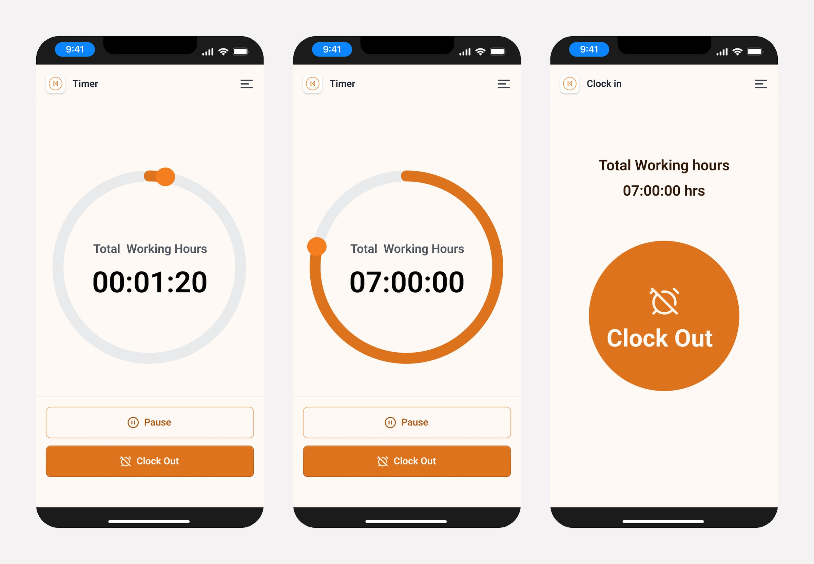
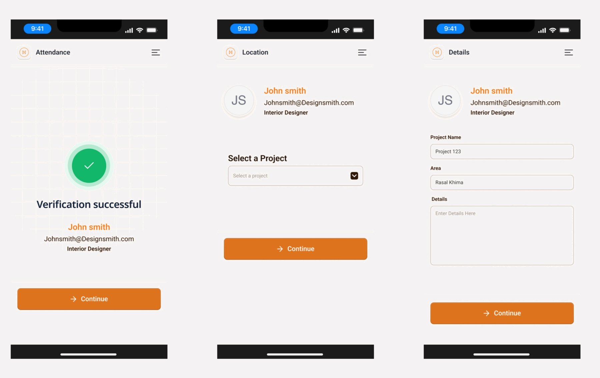
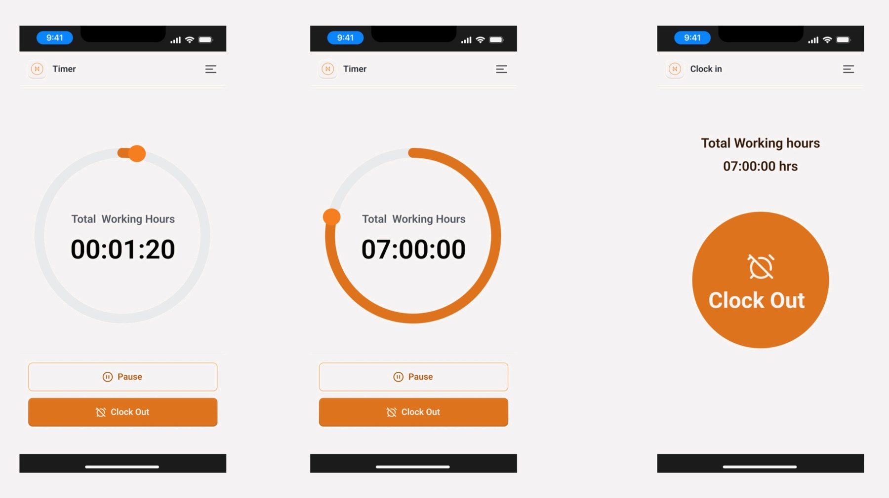

← All work
Face-verified clock-in for people working on site
Employees clock in on their phone with a face scan, choose the project they are working on, and track hours until clock-out.
Role
UX/UI Designer: flows, UI
Surfaces
Mobile app
Design system
Designsmith
Design goal
Clock in and out in a few taps

The problem
Clock-in apps are slow, unclear and stressful.
- Unclear scanning: no guidance on where to place your face or why a scan failed.
- Dead ends: a failed scan leaves the worker stuck with no clear way to retry.
Research
Competitors had strong recognition tech and weak feedback and recovery.
| Product | Strength | UX gap | Opportunity |
|---|---|---|---|
| Jibble | Fast mobile clock-in, geofencing | Confusing kiosk setup; struggles in low light | Clear guidance while scanning |
| Truein | Offline mode, strong liveness | Dated, cluttered admin UI | Simple, modern clock-in |
| Keka / Darwinbox | Full HRMS integration | Face scan buried in a heavy app | One-purpose, instant attendance |
| Buddy Punch | Simple setup | Weak real-time scan feedback | Clear live feedback and retry |
Users
Employees who clock in from site, on their own phone.
- Need: clock in and out in a few taps and see hours at a glance.
- Pain today: unclear scans and no easy way to retry.
- Also needed: hours recorded against the right project.
Key flow
From clock-in to clock-out in five steps.
01Clock inOne large button starts the day
02Face scanCapture, then retake or return
03VerifiedGreen check with name and role
04ProjectSelect project, then add area and details
05TimerLive hours, pause, clock out


Design system
Built on Designsmith, so the app matches the rest of the product.
- Foundations: the same orange accent, cream background and type as the Designsmith app.
- Reused: buttons, inputs, headers and navigation.
- Extended: the clock-in button, face-scan frame, verification state and working-hours timer.
Decisions
Key design decisions
| Decision | Why |
|---|---|
| One large Clock In button | The first action of the day is impossible to miss |
| Capture, with Retake and Return | A bad scan is never a dead end |
| Verification shows name and role | Confirms the right person before the day is logged |
| Project and details after verification | Hours land on the right project |
| Large live timer with Pause and Clock Out | Hours readable at a glance; end of day is one tap |
Outcome
A short, clear path from clock-in to clock-out.
- Nine mobile screens covering scan, verification, project selection and the hours timer.
- A retry path at every scan step, so a failed scan never blocks the worker.
- Built from the Designsmith system, so it looks and behaves like the rest of the app.
What I learned: in biometric products, the failure state matters as much as the success state.
← All work
Next case study
Intrakore Design System →